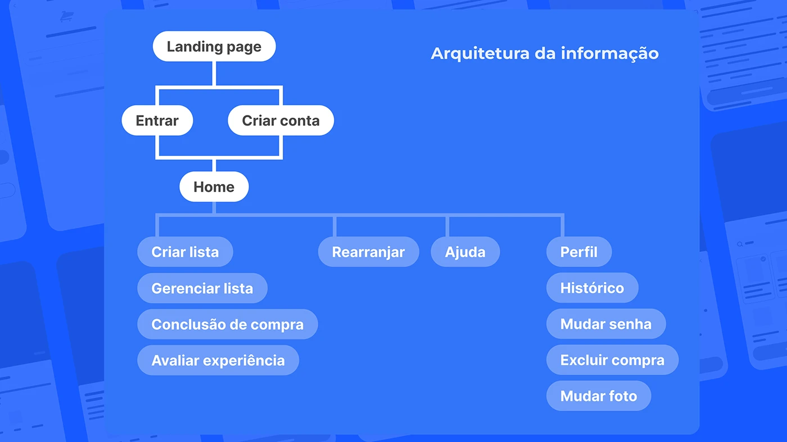
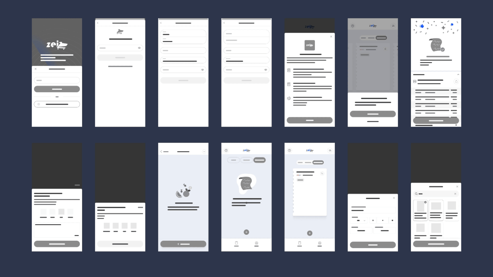

- O problema
- Quem faz compra de mercado com lista ainda gasta mais do que planejou e às vezes não encontra o que foi buscar.
- O que eu fiz
- Em 2024, participei da pesquisa do projeto. Em 2026, sozinha, troquei os números sem fonte por dados públicos, analisei concorrentes e avaliei as telas pelas heurísticas de Nielsen.
- O que mudou na revisão
- Troquei números sem fonte por dados públicos, encontrei um concorrente que resolve metade do problema e propus cortar o escopo de 13 funcionalidades para 3.
O problema
A ideia do Zei nasceu de uma cena comum: a pessoa faz a lista em casa, chega ao mercado, o produto não está na gôndola, ela pega outro mais caro, compra o que estava em promoção e descobre no caixa que passou do orçamento.
A primeira versão tratava isso como três problemas separados: falta de informação, estouro de orçamento e falta de produto. Revisitando, percebi que eles têm a mesma raiz: a decisão de compra escapa da lista no momento em que a pessoa está no corredor.
O que os dados públicos dizem
das últimas cinco compras de supermercado foram feitas sem planejamento, segundo os entrevistados.
SPC Brasil e CNDL, 2015das compras de mercado feitas por impulso têm a promoção como gatilho.
SBVC e Instituto Qualibestdos itens de uma lista digital são comprados, contra 85–91% de uma lista em papel. Quem usa lista no celular a trata como provisória.
Drexel University, 2019dos produtos estavam em falta nas gôndolas dos supermercados brasileiros ao longo de 2025, com pico de 15,3% em janeiro de 2024.
Índice de Ruptura NeogridO dado da Drexel foi o que mais mudou o projeto. Ele sugere que digitalizar a lista não basta e pode até piorar: a lista no celular parece editável, então vira sugestão, não compromisso. Um app de lista precisa fazer a lista ter peso na hora da decisão.
A pesquisa da SBVC aponta que a maioria das pessoas diz planejar a compra. Isso reforça a leitura: o problema não é a falta de lista, é o que acontece com ela dentro do mercado.
Hipóteses
Sem pesquisa com usuários, trato o que segue como hipóteses a validar, não como conclusões.
- Ver o total da compra subindo, comparado com o orçamento, faz a pessoa pensar duas vezes antes de pegar um item fora da lista.
- Saber antes de sair de casa se o produto está disponível, e por quanto, evita a troca por um item mais caro na hora.
- Uma lista compartilhada com a casa evita item duplicado e item esquecido.
Quem já resolve parte disso
Comparei o Zei com três apps reais, dois de lista de compras e um de preços feito a partir de notas fiscais.
| App | Lista compartilhada | Total e orçamento | Preço real na região | O que aprendi com ele |
|---|---|---|---|---|
| Listonic | Sim | Preço por item e total | Não, o preço é digitado | Mostrar quanto falta gastar ajuda a decidir, mas digitar o preço de cada item dá trabalho demais. |
| Bring! | Sim, em tempo real | Não | Não | A grade de ícones deixa a lista rápida de montar e fácil de ler no corredor. |
| Menor Preço Brasil | Não | Não | Sim, pelas notas fiscais | O dado de preço já existe e é público. O app busca produto por produto, não pela lista inteira. |
Fontes: Listonic e Bring! (comparação publicada pelo Listonic, conferir nas lojas de apps), Menor Preço no ES (Sefaz-ES), funcionamento do Menor Preço Brasil.
A oportunidade está no meio: ninguém junta a lista da casa com o preço real do mercado mais próximo e um orçamento visível.
Isso também resolve um problema que o projeto não previa em 2024: um app que depende de os usuários atualizarem preços começa sem nenhum dado e não tem motivo para alguém usar no primeiro dia.
A solução de 2024
O app foi organizado em quatro áreas: criar e gerenciar listas, concluir a compra, avaliar a experiência e perfil. Depois vieram os wireframes do fluxo principal e, por fim, a identidade e as telas em alta fidelidade.



Revisitando: avaliação das telas
Sem usuários para testar, avaliei a versão de 2024 com as 10 heurísticas de usabilidade de Jakob Nielsen. É uma inspeção feita por mim, então encontra problemas de interface, mas não substitui um teste com pessoas.
O app promete mais do que a estrutura entrega
Estética e design minimalista
A apresentação lista 13 funcionalidades, entre elas fila digital, mapa dinâmico, radar de promoções e formas de pagamento. A arquitetura só cobre listas e perfil. Cada funcionalidade a mais disputa atenção com a tarefa principal, que é fazer a compra caber na lista.
Proposta: manter só três: lista compartilhada, total comparado com o orçamento e preço e disponibilidade no mercado escolhido.
A conta vem antes do valor
Flexibilidade e eficiência de uso
O fluxo começa em "Entrar ou criar conta". A pessoa precisa se cadastrar antes de ver para que o app serve.
Proposta: deixar criar a primeira lista sem conta e pedir o cadastro só na hora de compartilhar com alguém, que é quando a conta passa a fazer sentido.
"Excluir compra" mora no perfil
Prevenção de erros
Uma ação destrutiva sobre uma compra está no mesmo menu de "Mudar senha" e "Mudar foto", longe da compra que ela apaga.
Proposta: mover a exclusão para dentro do histórico, ao lado da compra, com confirmação e opção de desfazer.
"Rearranjar" não diz o que faz
Correspondência entre o sistema e o mundo real
É um item do menu principal com um rótulo que não deixa claro se reorganiza a lista, os corredores ou outra coisa.
Proposta: trocar por uma ação dentro da lista, como "Ordenar pelo corredor", que diz exatamente o que acontece.
O que eu manteria: o estado de produto não encontrado
Ajudar a reconhecer e se recuperar de erros
Quando a busca não encontra o produto, a tela explica o que houve e oferece uma saída: adicionar o item manualmente. A pessoa nunca fica num beco sem saída.
Como eu validaria
O próximo passo é um teste de usabilidade com cinco pessoas que fazem compra de mercado toda semana, usando um protótipo com as três mudanças propostas.
- Tarefas: montar uma lista de 10 itens para a semana, definir um orçamento e simular a compra num mercado onde dois itens estão em falta.
- O que observar: quanto tempo leva para montar a lista, se a pessoa percebe o orçamento durante a compra e o que ela faz quando o item está em falta.
- Como saber se funcionou: a pessoa termina a simulação dentro do orçamento e com os itens da lista, ou com uma troca consciente.
O que aprendi
A versão de 2024 apostava em muitas funcionalidades, uma identidade forte e números grandes. Revisitar o projeto me ensinou a começar pela pergunta "o que precisa ser verdade para isso funcionar?" e cortar o que não responde a ela.
Também aprendi a procurar quem já resolveu parte do problema antes de desenhar. O Menor Preço Brasil já existia e teria mudado a solução desde o primeiro dia.